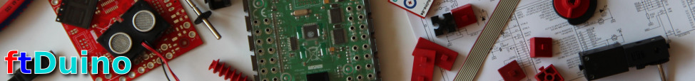

|  | |||||||||||||||
ftDuino - Arduino für fischertechnik
Neuigkeiten
Spezifikationen
Dokumente und Links
SchnellstartEine detailiertere Beschreibung findet sich im Handbuch. Es wird eine installierte Arduino-IDE vorausgesetzt. Ist bisher keine installiert, dann kann sie von der Arduino-Webseite kostenlos heruntergeladen und installiert werden. In der Arduino-IDE wird in den Voreinstellungen die URL wie im folgenden Bild zu sehen eingetragen: Danach ist der ftDuino im Boardverwalter auswählbar. Durch ein Klick auf "Installieren" wird die ftDuino-Unterstützung in die Arduino-IDE eingebunden. Nach der Installation kann der ftDuino also Board ausgewählt werden. Wenn alles geklappt hat tauchen nun die ftDuino-Beispiele in der IDE auf. Sie können direkt geöffnet und auf den ftDuino geladen werden. TreiberWindows 10, Linux und MacOS bringen bereits passende Treiber mit und der ftDuino ist direkt nutzbar. Unter Windows 7 muss eine INF-Datei installiert werden. Bestelle Deinen eigenen ftDuino
| |||||||||||||||